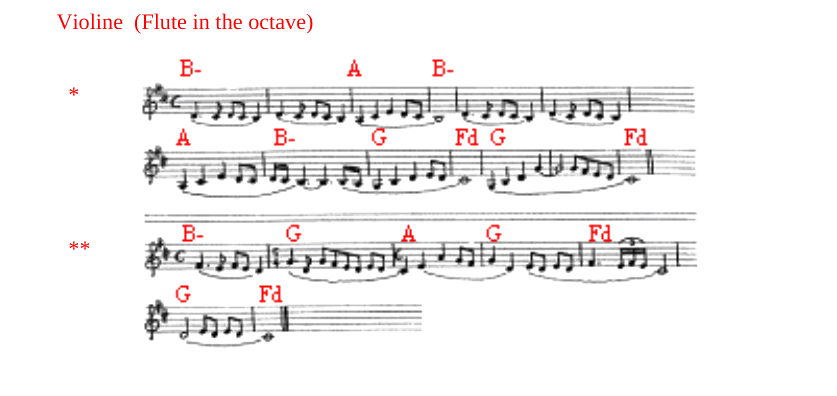

M.DNakupenda, ee FdBwana, ndiwe mwamba B-wangu,
WeGwe Mwokozi wangu, na Mungu Fdwangu.
NakuGpenda, nakupenda, ee FdBwana.
M.+K.DNilizingirwa na mawimbi ya mB-auti
yakanGitisha mapanda ya BeliDali
nilizunAgukwa na kamba za shGeoli
nikaangukia mitego ya maDuti.
VIOLIN *
M.+K.DNilizingirwa...
VIOLIN **
M.FdNalimwita Bwana kwenye dhiki yangu
Mungu wangu, Mungu wangu nilimkimbB-ilia,
Aakasikia sauti yangu hekaluni mGwake,
kilio changu kikafikia masiFdkioni mwake.
GNchi ikatikisika na kuteteFdmeka,
Gikasukasuka misingi ya mFdilima,
Gkwani aliziinamisha mbingu akaFdshuka,
Aikaonekana mikondo ya baFdhari,
Amisingi ya ulimwengu ikafichFduliwa.
AkaGnyosha mkono wake kunishika,
na kunitoa katika maji Fdmengi.
M.+K.DNilizingirwa…
M.+K.Nakupenda, ee Bwana…
